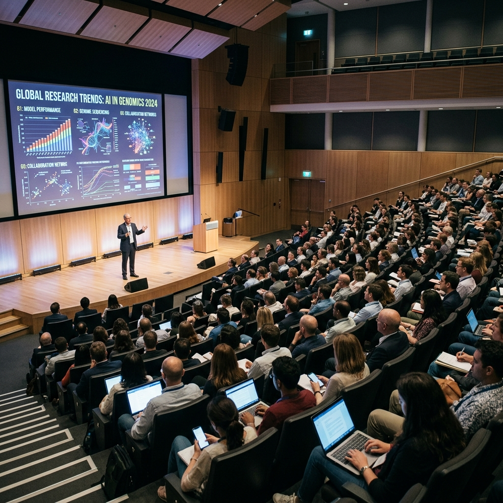

Meet the people behind ideas.
Discover academic scholars, interdisciplinary laboratories, and international conference keynotes.

People are the network.
ResearchGrid organizes research communities around fields, methods, publications and shared questions.
Dr. Mira Sen — Computational methods
Dr. Tomas Vale —
Climate systems
Dr. Leila Hart — Social research
Upcoming
conversations.
Demo conference records showing how events can sit alongside the research they bring together.
Methods for Open Science
Data, Cities & Society
Interdisciplinary Futures
Research groups &
laboratories.
Explore active research units, principal investigators, and collaborative teams.
Computational Fluid Dynamics Group
PI: Dr. Mira Sen · 14 Researchers
Developing deep operator networks and neural solvers for atmospheric and oceanic physics.
Urban Micro-Climate Observatory
PI: Dr. Tomas Vale · 18 Researchers
Deploying thermal micro-sensor telemetry arrays across global metropolitan zones.
Responsible AI Methods Laboratory
PI: Dr. Leila Hart · 11 Researchers
Creating open benchmark suites for evaluating safety, bias, and alignment in foundation models.
Distinguished
keynote roster.
Featured scholars speaking at our upcoming international symposiums.
Prof. Aris Thorne
Talk Title: "Multiscale Physics Meets Neural Operators: The Next Decade of Climate Simulation"
Dr. Elena Rostova
Talk Title: "FAIR Principles in High-Throughput Genomics and Evolutionary Bio-Data"
Dr. Marcus Brody
Talk Title: "Transparent Governance Frameworks for Large Scale Scientific Models"
Postdoc fellowship &
mentorship program.
Empowering early-career scholars through funded research tracks and lab placements.
Computational Physics Fellowship
2-year funded position with $85,000 annual stipend, HPC access, and publication grants.
Environmental Data Science Fellowship
Researching satellite telemetry, remote sensing algorithms, and micro-climate modeling.
Open Science Early-Career Track
Pairing PhD candidates with senior principal investigators for dataset curation and peer review.